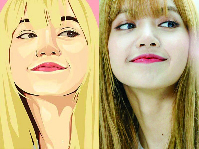

Kris Prediansyah Gold
Dapatkan berbagai informasi berguna untuk menjaga kebersihan dan lingkungan yang lebih sehat.

Pelajari cara-cara sederhana untuk mengurangi penggunaan plastik dalam kehidupan sehari-hari.

Daur ulang sampah dapat dimulai dari rumah Anda. Temukan manfaatnya bagi lingkungan.

Panduan praktis untuk menjaga kebersihan lingkungan sekitar Anda setiap hari.